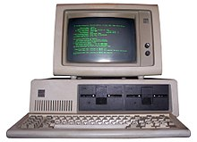
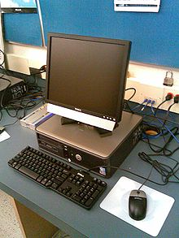

History of personal computers
Using the narrow definition of "operated by one person", the first personal computer was the ENIAC which became operational in 1946. It did not meet further definitions of affordable or easy to use.
An example of an early single-user computer was the LGP-30, created in 1956 by Stan Frankel and used for science and engineering as well as basic data processing. It came with a retail price of $46,000—equivalent to about $414,000 today.
The Soviet MIR series of computers was developed from 1965 to 1969 in a group headed by Victor Glushkov. It was designed as a relatively small-scale computer for use in engineering and scientific applications and contained a hardware implementation of a high-level programming language. Another innovative feature for that time was the user interface combining a keyboard with a monitor and light pen for correcting texts and drawing on screen. In what was later to be called the Mother of All Demos, SRI researcher Douglas Engelbart in 1968 gave a preview of what would become the staples of daily working life in the 21st century: e-mail, hypertext, word processing, video conferencing and the mouse. The demonstration required technical support staff and a mainframe time-sharing computer that were far too costly for individual business use at the time.
By the early 1970s, people in academic or research institutions had the opportunity for single-person use of a computer system in interactive mode for extended durations, although these systems would still have been too expensive to be owned by a single person. Early personal computers—generally called microcomputers—were often sold in a kit form and in limited volumes, and were of interest mostly to hobbyists and technicians. Minimal programming was done with toggle switches to enter instructions, and output was provided by front panel lamps. Practical use required adding peripherals such as keyboards, computer displays, disk drives, and printers. Micral N was the earliest commercial, non-kit microcomputer based on a microprocessor, the Intel 8008. It was built starting in 1972 and few hundred units were sold. This had been preceded by the Datapoint 2200 in 1970, for which the Intel 8008 had been commissioned, though not accepted for use. The CPU design implemented in the Datapoint 2200 became the basis for x86 architecture used in the original IBM PCand its descendants.
Another desktop portable APL machine, the MCM/70, was demonstrated in 1973 and shipped in 1974. It used the Intel 8008 processor.
A seminal step in personal computing was the 1973 Xerox Alto, developed at Xerox's Palo Alto Research Center (PARC). It had a graphical user interface (GUI) which later served as inspiration for Apple Computer's Macintosh, and Microsoft's Windows operating system. The Alto was a demonstration project, not commercialized, as the parts were too expensive to be affordable
Also in 1973 Hewlett Packard introduced fully BASIC programmable microcomputers that fit entirely on top of a desk, including a keyboard, a small one-line display and printer. The Wang 2200 microcomputer of 1973 had a full-size cathode ray tube (CRT) and cassette tape storage. These were generally expensive specialized computers sold for business or scientific uses. The introduction of the microprocessor, a single chip with all the circuitry that formerly occupied large cabinets, led to the proliferation of personal computers after 1975.
Global PC market share by units, percent (1996–2000)
| Rank | 1996 | 1997 | 1998 | 1999 | 2000 |
|---|---|---|---|---|---|
| 1 | Compaq 10.0 | Compaq 13.1 | Compaq 13.8 | Compaq 13.2 | Compaq 12.8 |
| 2 | IBM 8.6 | IBM 8.6 | IBM 8.2 | Dell 9.8 | Dell 10.8 |
| 3 | Packard Bell NEC 6.0 | Dell 5.5 | Dell 7.9 | IBM 7.9 | HP 7.6 |
| 4 | Apple 5.9 | HP 5.3 | HP 5.8 | HP 6.4 | IBM 6.8 |
| 5 | HP 4.3 | Packard Bell NEC 5.1 | Packard Bell NEC 4.3 | Packard Bell NEC 5.2 | NEC 4.3 |
| Others | 65.2 | 62.2 | 60.1 | 57.5 | 57.7 |
|  |
|---|
| IBM 5150, released in 1981 |
|  |
|---|
| A Dell OptiPlex desktop computer |